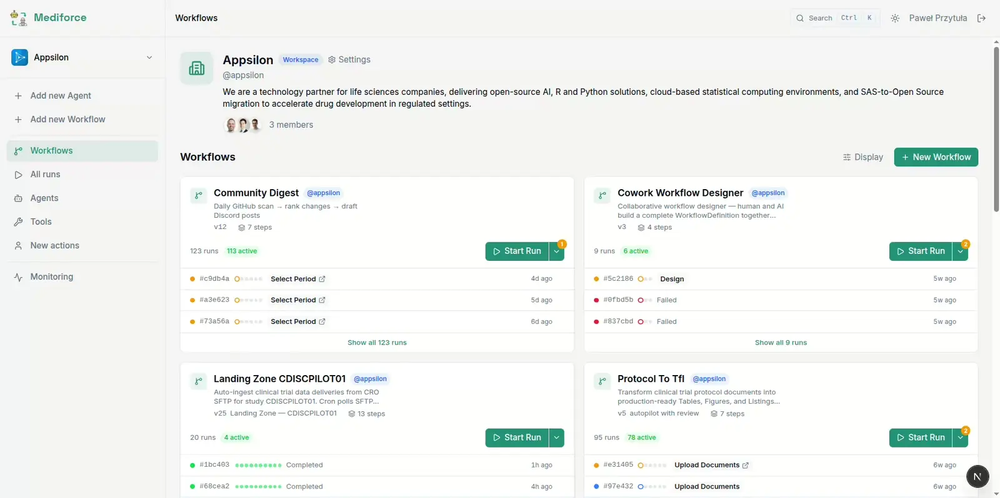
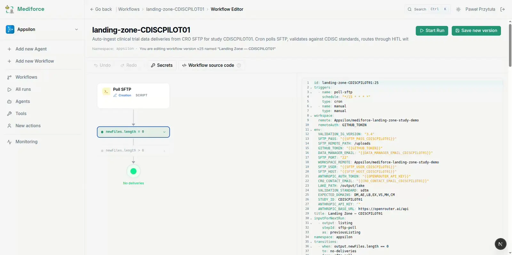
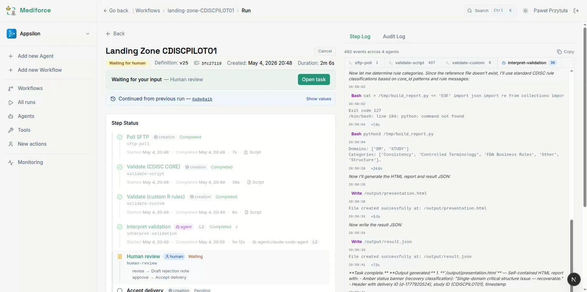
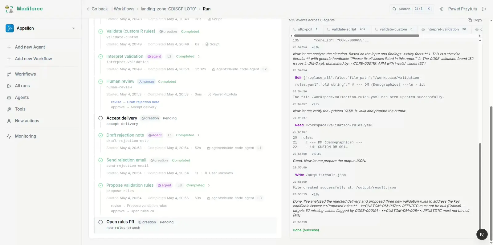
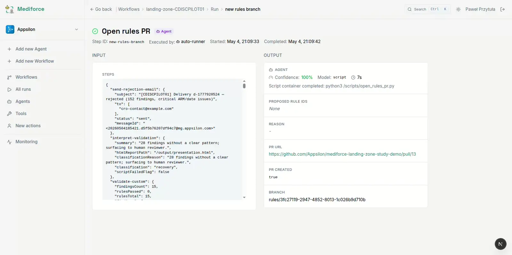

Your CRO sends data. Mediforce workflow reads files, validates it against CDISC standards, and AI suggest the best actions to your Data Managers.

Each CRO follows its own conventions - different file structures, controlled term variants, delivery schedules. Catching issues before they reach downstream pipelines requires coverage and speed that manual review can't sustain.
Site IDs, controlled term casing, date formats - every CRO does them differently. A data manager has to download the files, run CDISC validation, and manually sift through hundreds of findings to decide what's safe to pass downstream.
When a package fails validation - wrong structure, missing domains, inconsistent values - the manager writes a back-and-forth email to the CRO, waits for a redelivery, and retries the whole validation cycle from scratch.
As the database lock deadline approaches, the pressure to accept or reject deliveries fast increases. Unresolved findings pile up without a clear owner. The tool gives the data manager a structured view of exactly what needs a decision - so they can close cleanly under pressure, not just quickly.
Documentation for regulators is reconstructed from emails and spreadsheets weeks after decisions were made. Gaps and inconsistencies are discovered during inspection, not during the review itself.
Mediforce's visual workflow editor lets you wire together script steps, AI agents, and human review gates without writing infrastructure code. Every step type - SFTP poll, CDISC validation, human approval - is a node in the graph. Change the flow, not the code.

An autonomous workflow takes ingest off the data manager's plate and surfaces only the decisions that actually require human judgment.
A cron-driven workflow polls the CRO SFTP, diffs against the previous run's file listing, and downloads new files only when something has changed. No manual checking, no missed deliveries.
Every delivery runs through the CDISC CORE rules engine. Findings are categorised by severity (Critical / Major / Minor / Warning), mapped to the regulatory target (FDA, PMDA, EMA), and turned into a structured report.
An AI agent compiles the validation findings into a one-page HTML report - severity heatmap, top findings in priority order, and a clear classification. A notification is sent to the data manager with a direct link.
The data manager reviews the inline report and clicks Accept (with optional per-finding waivers on record) or Reject. The decision is logged with their identity and timestamp. That's the full extent of required human involvement for a clean delivery.
On rejection, an AI agent drafts a factual, bounded rejection note to the CRO in the operator's tone - scoped to the actual findings, ready to be reviewed and forwarded. No copy-pasting finding lists from a validator output.
When a delivery needs a decision, the data manager sees a single-page validation report: severity heatmap, top findings by priority, and two buttons - Accept or Reject. Reject requires a brief note on what needs fixing; the agent uses it to draft the CRO rejection letter. The full audit record writes itself. No spreadsheets, no email threading, no re-running the validator to remember what the numbers were.

When the same fixable issue appears across multiple CRO deliveries - a site ID format variant, a controlled term mismatch - the agent proposes a new cleaning rule. Rules are surfaced as a readable suggestion, reviewed by a human before they go live. The system gets smarter without getting opaque.

The work that used to take an afternoon takes a click and a copy-paste.
An email or task notification: "Delivery from CRO X arrived - 5 findings, classification: needs review." No manual polling of the SFTP, no waiting for someone to ping you.
Follow the link to the HTML report - severity heatmap, top findings in priority order, and a status banner if validation itself hit an error. Everything in one page.
Two buttons. Accept passes the delivery downstream - with optional per-finding waivers on record. Reject prompts for a brief note on what needs fixing; the agent uses that note to draft the CRO rejection letter. The decision is logged with your identity and timestamp.
If you rejected: a markdown rejection note is waiting in the next task, drafted by the agent, scoped to the actual findings. Copy, paste into email, send. Done.
CDISC rules catch structural conformance. Study-specific logic - therapeutic-area thresholds, sponsor-defined derivation checks, site-level anomaly patterns - lives in your team's existing scripts. Mediforce runs R/pointblank, Python, or any containerized validator as a native pipeline step. Rules are versioned YAML files owned by data managers, not buried in tool configuration. The same accept/reject workflow applies; the same git audit trail captures every run.
# Study-specific AE checks — owned by the DM team checks: - id: ae_severity_range description: AESEV must be Mild, Moderate, or Severe domain: AE script: ae_checks.R severity: critical - id: lb_outlier_screen description: Flag lab values > 4 SD from site mean domain: LB script: lb_outliers.py severity: major
library(pointblank) ae <- read_input("AE") create_agent(tbl = ae) |> col_vals_in_set( columns = AESEV, set = c("Mild", "Moderate", "Severe") ) |> interrogate() |> write_result()
Proposed cleaning rules are opened as pull requests against the study config repository - reviewable in GitHub, versioned, and instantly reversible. The agent shows its reasoning; the reviewer approves or rejects. No shadow config files, no undocumented changes, no "who changed this and why" at inspection time.

We'll run the full workflow - SFTP delivery to validated report - and walk you through each step so you can see exactly how it fits your team's process.
30-minute video call. We run a live demo against the CDISC Pilot 3 dataset - a real study, real CDISC validation findings, real Accept / Reject decision flow.
Tailored to your workflow. Tell us your CRO setup and we'll show you how the config maps to your delivery structure, study contract, and validation rules.
No sales pressure. This is a technical walkthrough by the people who built it. We want you to understand the architecture, not just see a polished slide deck.
Leave your email and a short note about your setup. We'll reply within one business day to schedule a time.
We don't share your contact details. No newsletter, no drip campaign - just a reply to book the call.